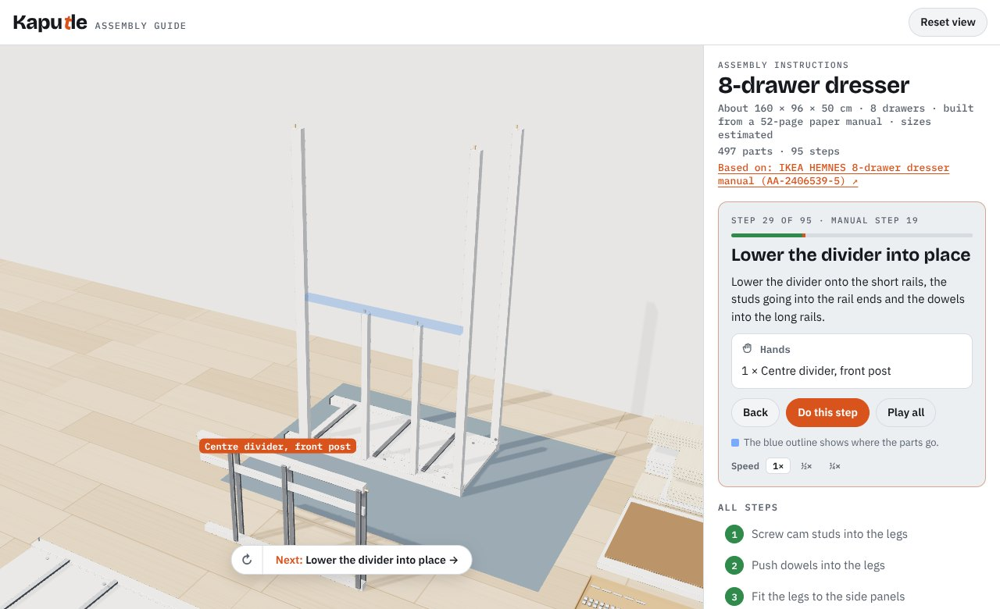
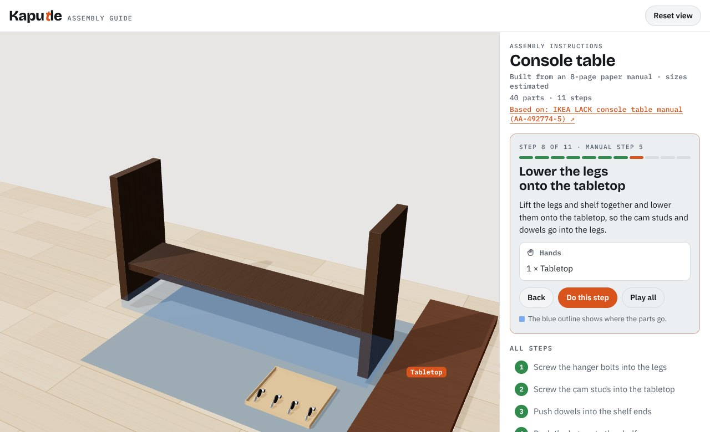

I build interactive 3D things for the web. Right now that means turning paper assembly manuals into 3D guides you can step through, turn around, and actually follow.
After the console table below, I wanted to know if the same approach could handle a hard manual, so I picked IKEA’s HEMNES 8-drawer dresser: 52 pages, almost 500 parts. The guide follows it step for step. The frame is built lying on its side, stood up, laid on its front for the back panels, and stood up again. The centre divider is put together on the floor, turned over and stood on its edge before it goes in. All eight drawers are built, turned upside down for their runners, and slid in in the order the manual gives.
Getting there meant teaching the player new things: turning pieces over on the floor, quarter turns, parts fitted to parts fitted to parts (a screw into a drawer side that’s already on its front), and jumping straight to any of the 95 steps.

Manual step 19: with the frame on its side, lower the centre divider onto the short rails.
Every part count matches the bags in the manual, down to the 69 cam locks. If you tap a part hidden inside, like a drawer side, it shows you the drawer it belongs to.
I took the 8-page paper manual for IKEA’s LACK console table and turned it into an interactive 3D guide. It follows the manual step for step, in the same order: the bolts go into the legs while they lie flat, the table is built upside down, and it flips upright at the end, just like the drawings.
Every piece of hardware shows the part number printed in the manual, so you can match it to what’s in the box. Each step says which manual step it comes from, and a blue outline shows where the next part goes.

Manual step 5: lift the legs and shelf, and lower them onto the tabletop.
Nothing is hand-animated. The player reads one file that lists every part and every step, and builds the whole guide from it. I’m also building a tool where Claude reads a manual PDF and drafts that file, so a new product doesn’t need new code.
40 parts · 11 steps · all 7 manual steps · Three.js
Not affiliated with IKEA. The manuals are IKEA’s; the 3D models and guides are my own, with sizes estimated from the drawings.
How I work
I come up with the idea, decide how it should feel, and test every version until it does. I write the code with Claude Code as a pair programmer, and I’m happy to walk through how any part of it works.
Contact
If you sell a physical product and want an assembly guide like these, or you just want to talk about it, email me.